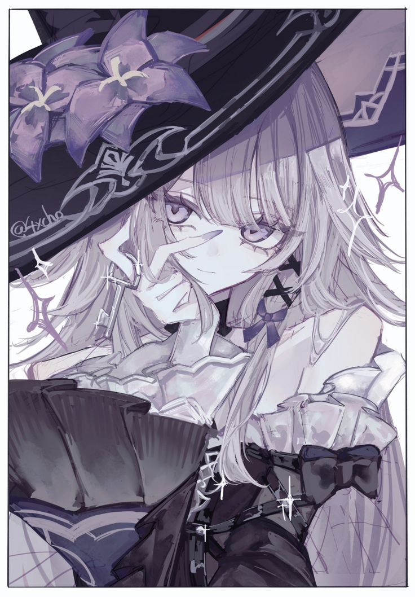

Tap the book to open
Arrows open a page. The others copy an ID.
monu's grimoire

monu
paused · tap the seal String Theory vally.exe
Tap the book to open
Arrows open a page. The others copy an ID.
monu's grimoire

paused · tap the seal String Theory vally.exe